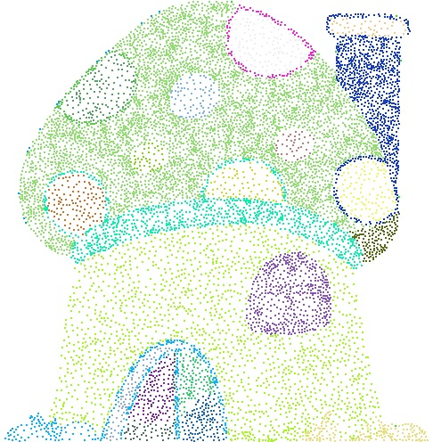
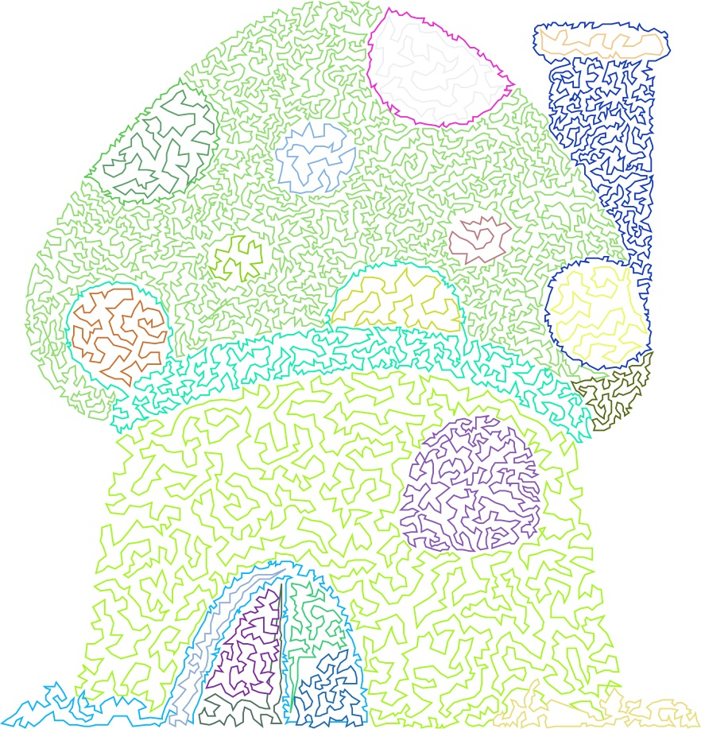

Input image, segmentation result, stippling result, k-CLD result.
Abstract
Continuous line drawing (CLD) is a technique used in the field
of art, in which the pen does not leave the paper until the sketch is
completed. In this study, a novel technique, k-continuous line drawing
(k-CLD), is proposed; this technique enables a visual image to comprise k
closed non-intersecting lines. k-CLD involves the following challenges:
1) partitioning the target image into k regions, 2) stippling each region
without distorting the target image, and 3) connecting the stippled dots
in each region using a single closed, non-intersecting line. This study
identifies and implements efficient algorithms to produce high-quality k-
CLDs. Further, an improvement to the graph-based image segmentation
algorithm has been proposed using the Minkowski distance to evaluate
dissimilarity difference and demonstrated its effectiveness to partition
the target image into k regions. Next, well-spaced stippled dots were
generated in each region using a weighted Voronoi diagram. Finally, the
stippled dots were connected by a single non-intersecting line, obtained
by solving a traveling salesman problem (TSP) in each region. The
metaheuristic to solve the TSP was an ant colony system algorithm. The
proposed methodologies were tested on a wide variety of images to
demonstrate their effectiveness and efficiency.
Research Highlights
Linking the soft computing algorithm to the art
Development and implementation of a complete algorithm to draw k continuous line drawing
Modification of graph-based segmentation algorithm
Understanding of computer graphics and conversion basics
Introduction of a new art technique: k continuous line drawing